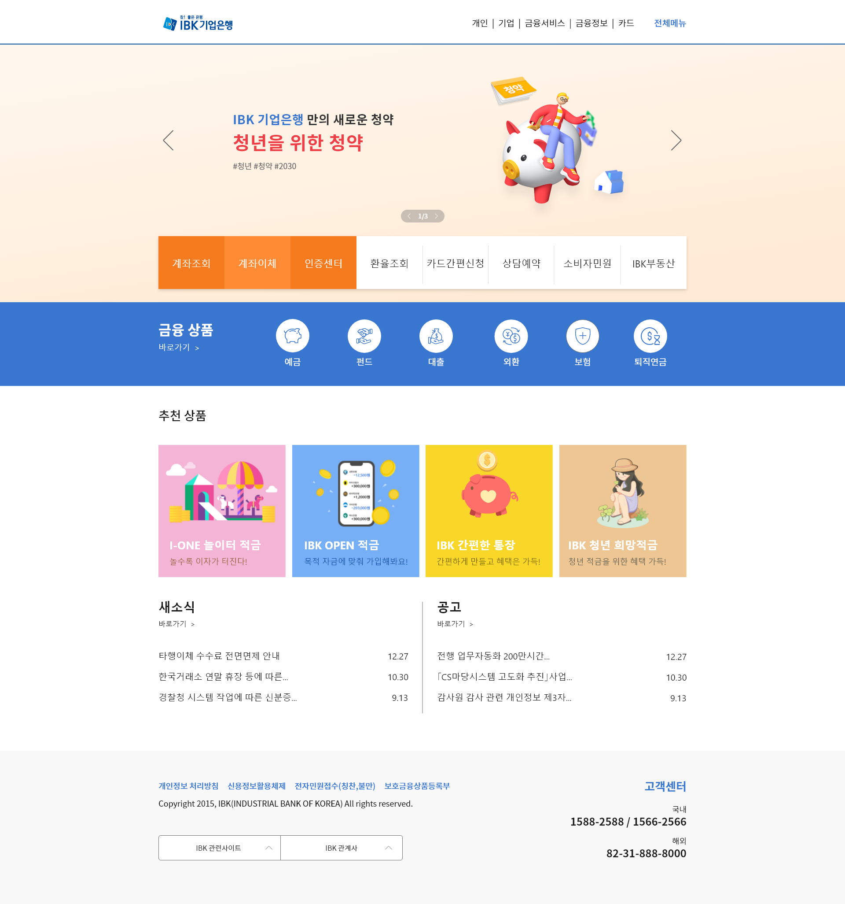

Project Background
ABOUT
타 은행 사이트에 비해 가독성이 떨어지며 ux만족도가 떨어지는 것으로 판단되어 전반적으로 UI를 개선해
UX의 만족도를 높여주기 위해 본 프로젝트를 진행함.
AS-IS
폰트의 크기와 간격등이 비좁아 전반적인 가독성이 떨어지며 메인 배너에도 불필요한 정보를
나타내고 있어 사용자를 위한 사이트라는 느낌과는 거리가 멀다. 또한 은행 사이트에서 가장 많이 사용하는
버튼에 포인트가 없어 사용성이 떨어져보임.
Project Goal
TO-BE
리디자인 방향성
기업은행의 주 포인트 컬러인 블루와 오렌지를 메뉴에 활용해 주로 사용하는 서비스
버튼에 차별점을 줄것이다. 또한 일러스트를 곳곳에 활용해 심미성과 사용성을 높이고 전반적인 폰트를 조정
하여 가독성을 높이는데 노력함.
구체적 해결 방안
주 포인트 컬러를 적극적으로 활용하고 픽토그램과 일러스트들을 활용해 심미성을
높이며 전체적인 폰트 조정을 통해 사용자를 위한 사용성 높은 사이트로 제작함.
Color Concept
-
#FFFFFF
MAIN
-
#000000
MAIN
-
#FF7A3A
POINT
-
#82FD38
POINT
Typography
Noto Sans KR Thin
Sans KR Medium
Noto Sans KR Blod
Layout
WEB DESIGN
은행 특유의 정적이고 올드한 이미지를 탈피 하는데에 집중했고
사용자가 가장 많이 사용하는 서비스 부문에 해당하는 항목을 기업은행의
두번째 포인트 컬러인 오렌지 컬러를 적극적으로 활용해 한 눈에 보임과 동시에
사용성을 높이는데 집중했다.

RESPONSIVE WEB DESIGN